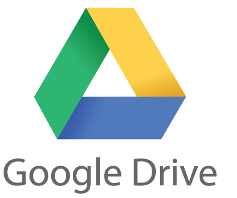
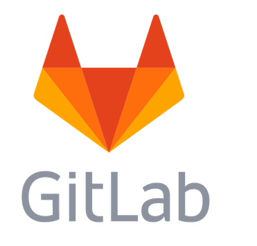

Design
System Architecture
- Main application created with Unity3D and built for use on the Microsoft HoloLens.
- The main application is completely self-serving and doesn’t require use of the internet or any outside components that requires any sort of sustained connection. It was created in Unity3D with all functions written in C# scripts. Clothing is all represented as game objects and the functions with which we manipulate them all make use of transform components of the game objects to adjust their attributes at runtime in the game world.
- The UI make use of the scene structure to group different categories of clothing and the use of the Renderer component to allow the user to pick between articles of clothing.
- Use of the chatbot API to integrate it into the application.
- The chatbot has it’s own scene within the main application with its own UI. We use the HoloLens’ hologram keyboard to facilitate text input as queries. The queries are then sent via the API to the AI chatbot server using a POST request and the application gets a response full of information that we parse locally in order to decide what information is useful to the user.
- Use of the Vuforia framework to provide the image recognition function.
- The image recognition also has its own scene within the main application. There is no real UI except for a button taking the user to/from the Watches/Bracelets section, where the image recogntion scene is. It connects to the Vuforia API for Unity, and enables us to use scripts such as EnableExtendedTracking. Further details of its implementation can be found in the implementation section below.
Hardware
- Microsoft HoloLens
The Microsoft HoloLens is the device and platform on which are application is to be used. The project was made with the purpose of seeing what augmented reality can provide in emulation of a virtual personal shopping experience. This is why we haven’t made it available on other platforms. It is still pre-production and so doesn’t provide the perfect consumer experience as would have been useful for our project. This led to us evaluating the things that would actually improve it such as increasing the field of vision both horizontally and vertically, improving the resolution which would hopefully lead to an increase in photo-realism of the holograms. This was especially relevant as the realism of clothing in the HoloLens is important to providing the EIP experience. - Sense 3D Scanner
We used the Sense 3D Scanner to scan clothing lent to us by NET-A-PORTER. This is a handheld scanner that we connect to a laptop with a USB cable. The Sense 3D software then takes the images sent to it by the scanner and stitches them together into a 3D model. We used a mannequin to give the clothing form while we scanned it. The scanner isn’t top of the line so it affected the quality of the scans that came out and this was detrimental to the realism we seeked to provide. - Sierra, K.; Freeman, E. (2004). Head First Design Patterns. O'Reilly Media: 1st edition
- https://sourcemaking.com/design_patterns
- https://twobenches.wordpress.com/2008/06/05/don-normans-design-principles/
- http://wiki.unity3d.com/index.php/Singleton
Design Patterns
Singleton
As most of the scripts available from HoloToolkit-Unity implement the Singleton design pattern, we figured that we also follow the same design pattern for the scripts that we created ourselves. The Singleton design pattern restricts the instantiation of a class to one object. There are several advantages to using this design patterns, for example, this automatically creates classes with a static initialization method and making them immutable. Another advantage is that Singleton can implement an interface which allows us to have game objects with other components on it so that we can have better organization of our GameObjects in the Unity scene.
Composite
The Composite design pattern is described as “a container which provides the same interface as the components it contains”. This design pattern also composes objects into tree structures and are treated as hierarchies. Composite is used a lot in Unity as it allows you to have multiple functionalities within a single GameObject (renderer, scripts, animator, etc.). This is useful in our app since we have multiple elements in one GameObject but Unity will still treat this as a single entity, thus making it easier to make changes to a collection of components instead of changing them one by one.
Prototype
The Prototype design pattern is a core concept in Unity. The Prototype pattern is described as “a fully initialized instance to be copied or cloned”. This is the whole idea of the prefab system in Unity. Within a prefab, we can store a GameObject along with its components and properties. The prefab acts as a template from which we can create new object instances in the scene. Any changes that we make to a prefab asset are immediately reflected in all instances instantiated from it. Thus, this design pattern helps us to simplify the creation of objects that are identical, or slightly different from each other.
Decorator
GameObjects in Unity can gain the ability to perform functions by having behaviours added to them. This technique is known as the Decorator design pattern. This design pattern allows behaviour to be added to an individual object without affecting the behaviour of other objects from the same class. This is especially useful when we want to add behaviours to certain buttons only when they are hovered over, but not other buttons that are static.
Lazy Initialization
Lazy Initialization is a design pattern tactic of delaying the creation of an object (in our case, displaying garments from other categories) until the first time it is needed. In our app, we do not load the other scenes until it is called (when the button of a category is pressed). This is to save processing resources of the Hololens to improve loading time and thus making the app to be more efficient and increase its performance quality.
Development Tools
 Communication:
Communication:Slack: For communication between our team members, we used Slack to discuss about problems, brainstorming ideas, and setting up group meetings. Using this platform allows us to effectively communicate and categorize conversations to keep track of important information.
File storage:
Google Drive: Google Drive is our primary file storage platform to store things like 3D model assets, picture assets, video recordings of our app and more. We also collaborate on documents like biweekly reports, presentation slides and website content on Google Docs.
UI design:
Adobe Photoshop: For UI design, all of the buttons, panels and screens are designed in Adobe Photoshop. It is a powerful software for graphic design and allows us to create beatiful and elegant UI elements that are consistent all throughout the app.
Version control:
Gitlab: We use GitLab as a platform where we can collaborate on the same files which also serves as a version control platform so we can recover files that were accidentally overwritten or lost. We use GitLab to store our project repository as well as the website repository.
IDE:
Visual Studio: As we implemented C# scripts on most of the GameObjects in Unity, we used Visual Studio to write the scripts as well as to deploy our app to the Hololens. Hololens app deployment can only be done in Visual Studio.
Implementation Details of Key Functionalities
References